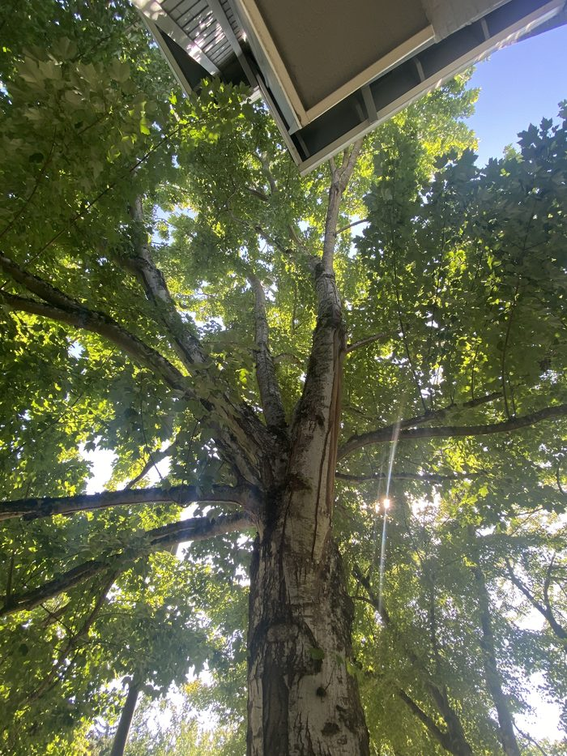

Branches touching the roof
When a tree's canopy grows into direct contact with a roofline, it does more than scrape shingles. Constant rubbing wears through roofing material years before it should, and the point of contact holds moisture against the roof long after the rest of it has dried — a slow, quiet path to rot and leaks. It also gives insects and rodents a direct bridge from the canopy onto the structure. If a limb like this fails in a windstorm, it's already resting on the roof it's about to fall onto. Cutting back the clearance is inexpensive compared to what a compromised roof costs to fix.